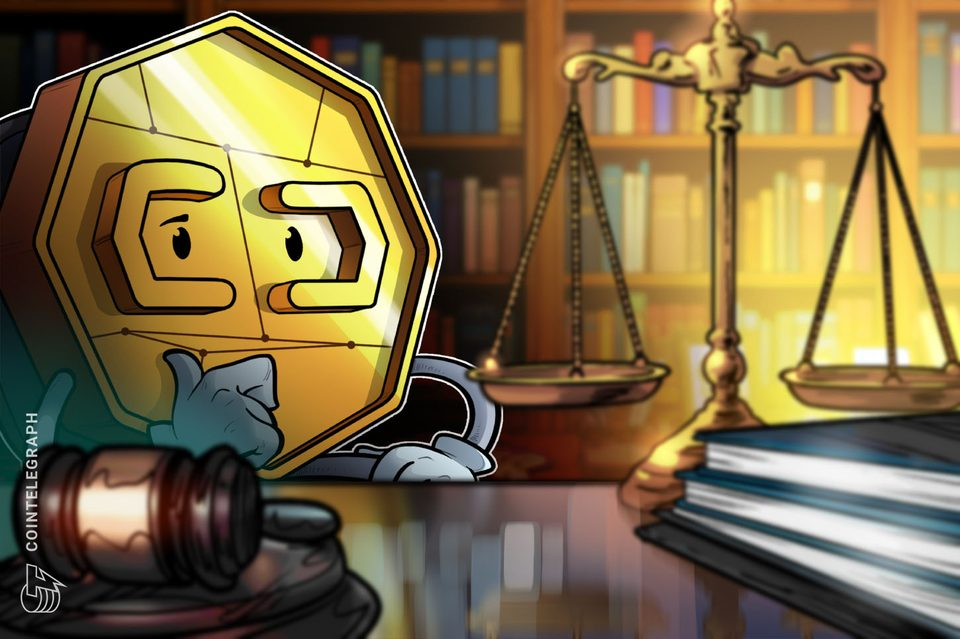
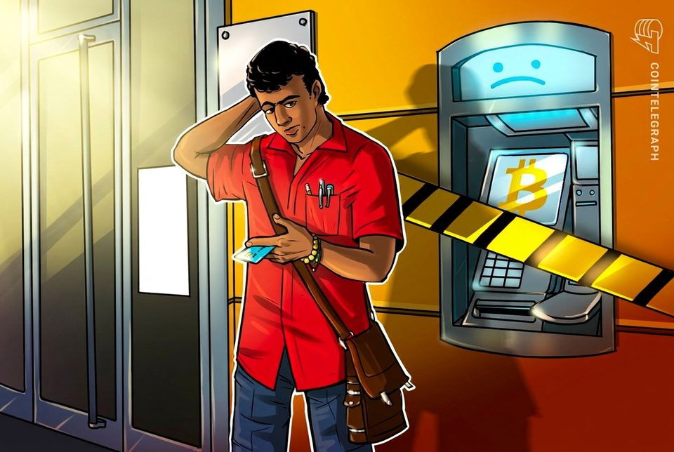
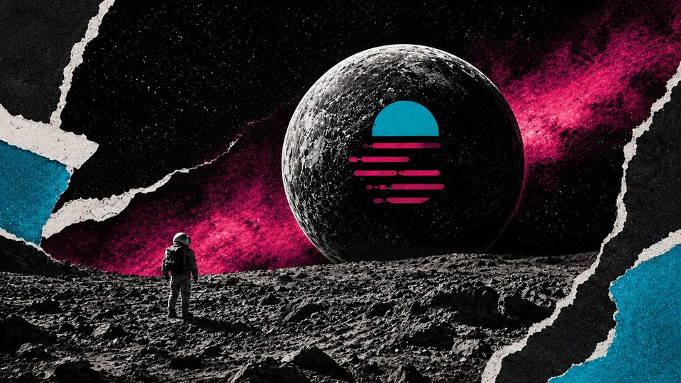

August 1, 2026
Daily headline set with source diversity, cleaned links, and local static rendering.

Onchain, in court: What happened in crypto legal news this week
A case tied to defunct crypto exchange FTX moves forward, a soldier seeks to dismiss over a Polymarket bet and a former congressman was ordered to pay $35,000 for manipulative trading.
One public crypto firm just staked its way to breaking even, but a $50M paper loss and 66% dilution threat tell a darker story
The token rewards roughly matched its non-GAAP cash-cost proxy but remained unsold as warrants for up to 33.5 million shares became exercisable. The post One public crypto firm just staked its way to breaking even, but...
Bitcoin cold-wallet attack spreads to 4,500 addresses as losses near $89 million
Bitcoin cold-wallet attack spreads to 4,500 addresses as losses near $89 million
CZ Warns Bitcoin Holders After $70 Million Wallet Exploit: 'Nothing Is 100%'
The Binance founder urged holders to spread funds across multiple wallets as Galaxy Research put the toll from the Coldcard exploit at roughly $70 million—nearly double the initial estimate.

Minnesota crypto ATM ban goes into effect after reported $1M losses
State officials reported that Minnesota residents, and largely senior citizens, had lost about $1 million from scams tied to crypto kiosks from 2023 to 2025.

Moonbeam just halted all user transactions, leaving late GLMR holders at mercy of an email helpdesk to recover funds
The snapshot tracks direct bridge use, not stranded supply, while self-custodied tokens and protocol positions face separate action paths. The post Moonbeam just halted all user transactions, leaving late GLMR holders...
Tokenized stock trading surged 288% in July, but one QQQ token drove most of it
Tokenized stock trading surged 288% in July, but one QQQ token drove most of it
The More Americans Know About AI, the Less They Like It: Gallup
Gallup says Americans are growing more skeptical of artificial intelligence, with rising concerns about job losses, businesses' use of the technology, and the technology’s growing impact.
Crypto PAC pours another $1M into Michigan House race
Michigan incumbent Shri Thanedar’s re-election bid against other Democratic candidates is getting more about crypto with an infusion of ads funded by an industry-aligned PAC.
A major Japanese Bitcoin mining pool just pulled the plug on its Bitcoin service just as 3 mega-miners claimed 60% of the network
The leaders were already dominant before the cutoff, and aggregate data do not identify a destination for SBI’s lost pool hashrate. The post A major Japanese Bitcoin mining pool just pulled the plug on its Bitcoin...
Bank of Italy research suggests stablecoins aren't necessarily cheaper for remittances
Bank of Italy research suggests stablecoins aren't necessarily cheaper for remittances

Google Yanks Google Earth AI Image Tool a Day After Launch Over Deepfake Fears
The Nano Banana tool let users generate fake satellite scenes from a text prompt, alarming investigators who rely on Google Earth to verify breaking news and atrocities.